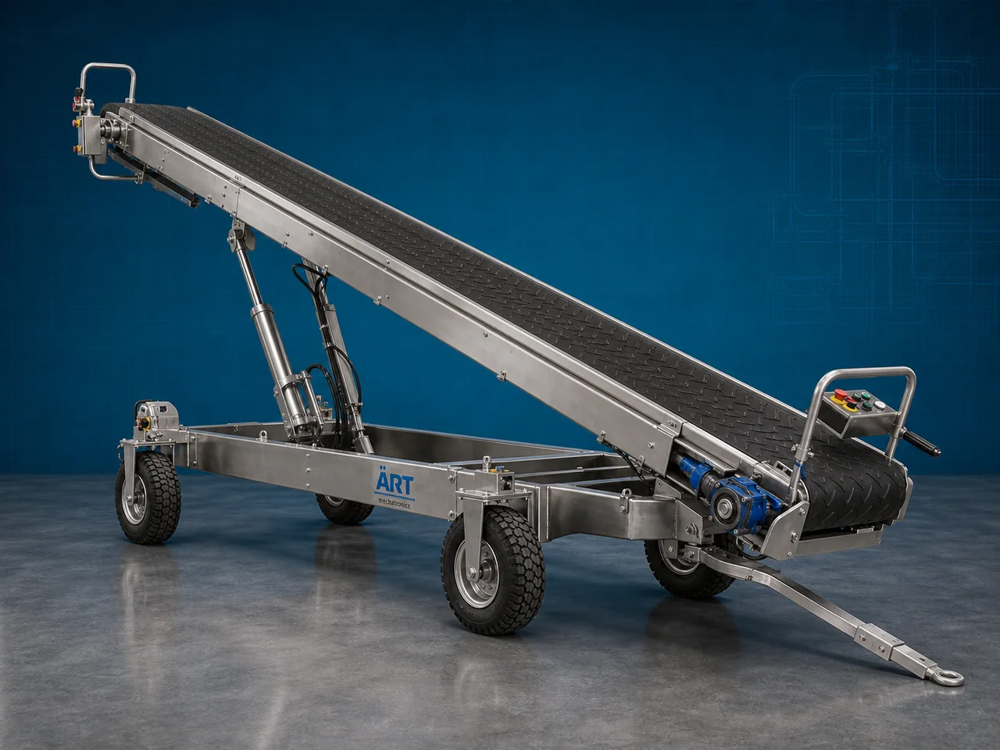

Loading & Unloading Conveyor Machine (Industrial Material Handling & Truck Loading System)
A Loading & Unloading Conveyor Machine, also known as a Truck Loading Conveyor, Container Loading Conveyor, or Industrial Material Handling Conveyor System, is a highly efficient industrial equipment designed for fast, safe, and continuous loading and unloading of cartons, sacks, bags, boxes, parcels, packages, drums, and industrial products into or out of trucks, containers, warehouses, and production facilities.

About the Loading & Unloading Conveyor
Loading and unloading conveyor systems are essential for:
- Warehouse automation
- Truck loading operations
- Container unloading
- Dispatch handling
- Material transfer automation
- Logistics optimization
The machine improves:
- Loading and unloading speed
- Labor efficiency
- Material handling safety
- Production productivity
- Operational workflow
- Space utilization
The conveyor operates using:
- Motor-driven belt systems
- Roller conveyors
- Telescopic extension systems
- Inclined conveyor structures
- Mobile conveyor arrangements
to move products continuously with minimal manual handling.
Loading & unloading conveyor machines are widely used in industries such as:
Warehousing & logistics
Packaging industries
E-commerce fulfillment centers
Food processing industries
Manufacturing plants
Courier and parcel industries
Cement industries
Fertilizer industries
where high-speed material movement and efficient dispatch operations are essential.
The machine is highly suitable for:
- Truck loading
- Container unloading
- Sack handling
- Carton movement
- Parcel handling
- Warehouse material transfer
ART Mechatronics offers high-performance loading & unloading conveyor machines, engineered for continuous industrial operation, heavy-duty material handling, flexible movement, and reliable long-term performance.
Working Principle of Loading & Unloading Conveyor Machine
Conveyor placed near truck, container, warehouse dock, or dispatch area
Motor-driven conveyor system starts continuous movement
Products move smoothly along conveyor path
Machine handles:
- Boxes
- Cartons
- Bags
- Sacks
- Parcels
- Drums
- Industrial products during loading and unloading operations.
Conveyor may include: Inclined design Telescopic extension Mobile wheel-mounted structure for flexible operation.
Conveyor integrates with: Warehouses Dispatch lines Packaging lines Sorting systems Production facilities
Products transferred directly into trucks, containers, or warehouse storage zones
Types of Loading & Unloading Conveyor Machines
- 1. Truck Loading Conveyor
Designed for: ✔ Efficient truck loading operations
- 2. Container Unloading Conveyor
Suitable for: ✔ Fast container unloading applications
- 3. Mobile Loading Conveyor
Uses: ✔ Wheel-mounted mobile conveyor system for flexible industrial use.
- 4. Telescopic Loading Conveyor
Uses: ✔ Extendable conveyor structure for deep truck and container access.
- 5. Inclined Loading Conveyor
Suitable for: ✔ Elevated loading and unloading applications
- 6. Heavy Duty Industrial Loading Conveyor
Designed for: ✔ High-capacity industrial material handling operations
Industries Using Loading & Unloading Conveyor Machine
🚚 Warehousing & Logistics Industry Truck loading and unloading systems 🛒 E-Commerce Industry Parcel and package handling automation 📦 Packaging Industry Dispatch and transfer conveyor systems 🍃 Food Processing Industry Product loading and warehouse transfer systems 🏭 Manufacturing Industry Finished goods loading operations 🌱 Fertilizer Industry Fertilizer bag loading systems 🏗️ Cement Industry Cement sack loading and unloading operations 🚛 Courier & Parcel Industry Parcel handling and logistics automation
Features & Advantages
- Fast and efficient loading and unloading operations
- Reduces manual labor and handling time
- Improves warehouse and logistics productivity
- Heavy-duty industrial construction
- Mobile and flexible conveyor options available
- Continuous industrial operation
- Adjustable height and inclination options
- Easy integration with warehouse automation systems
- Low maintenance and energy-efficient operation
Technical Highlights
Conveyor Type: Belt conveyor Roller conveyor Telescopic conveyor Inclined conveyor Construction: Stainless Steel / Mild Steel Belt Material: PVC Rubber Heavy-duty industrial belts Mobility: Fixed type Mobile wheel-mounted type Drive System: Geared motor drive Variable frequency drive (VFD) Automation: Semi-automatic Fully automatic PLC-based systems
Turnkey Loading & Unloading Solutions
ART Mechatronics offers: Complete loading and unloading conveyor systems Warehouse automation integration Truck loading and dispatch solutions Packaging line material handling systems Installation & commissioning After-sales service & AMC
Why Choose Art Mechatronics
Expertise in industrial logistics and material handling systems Customized conveyor solutions for multiple industries High-performance and durable industrial construction Energy-efficient and reliable conveying systems Proven industrial performance across sectors
Applications
Warehousing & Logistics Centers E-Commerce Fulfillment Centers Packaging Facilities Manufacturing Industries Food Processing Plants Dispatch & Distribution Centers
Related Conveying & Handling machines
Get pricing & specs for the Loading & Unloading Conveyor
Share the product, target capacity, current process and plant location. These details help our engineers discuss the right machine or line configuration.
One partner, from design to start-up
ART Mechatronics designs, manufactures, installs and commissions your Loading & Unloading Conveyor solution with regional presence in India, UAE and Thailand.